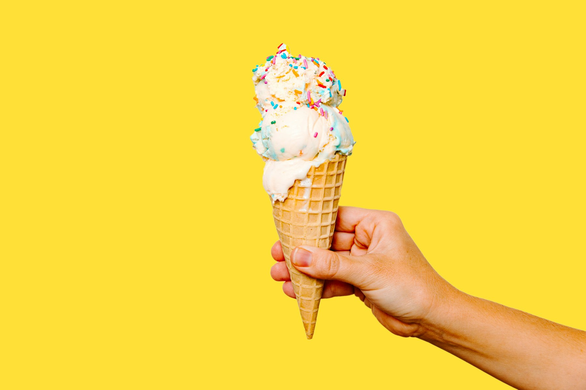
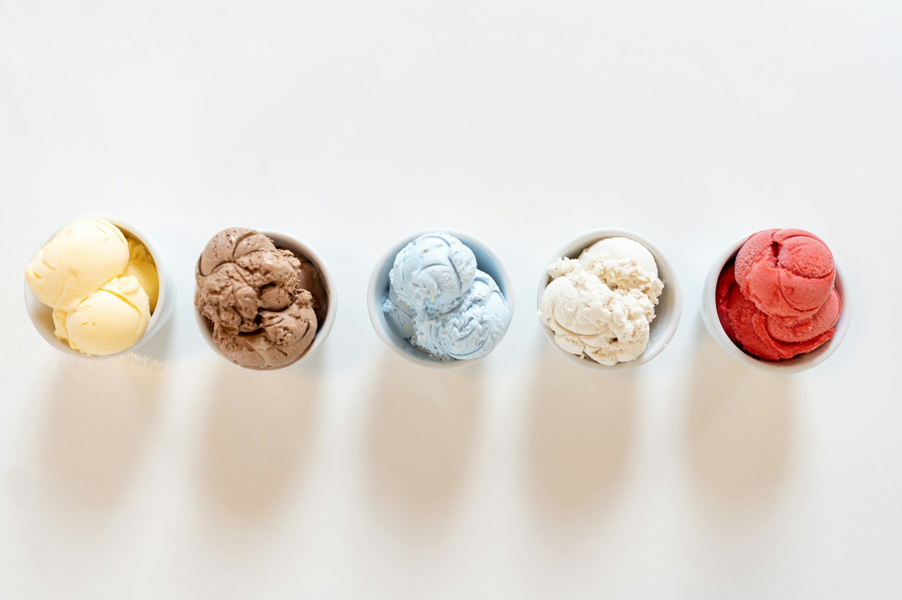
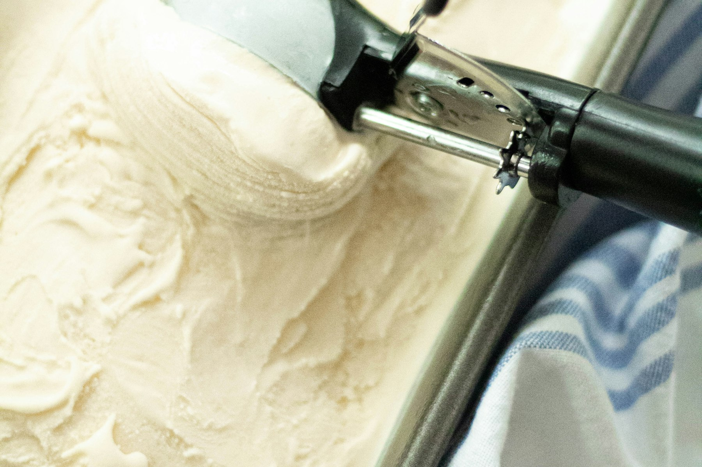

Eis, das nach Sommer schmeckt.
Seit 1968 im Hof hinter der Bäckerei. Alles selbst gerührt, jeden Morgen, in kleinen Mengen. Was heute in der Theke steht, steht hier.
Was heute da ist
Heuteoffen
Die Tafel
Blasse Felder heißen: heute nicht in der Theke. Preis gilt je Kugel.

Bau dir deine Waffel
Bis zu drei Kugeln. Der Preis rechnet sich mit, und die Allergene darunter auch. Die Waffel selbst bringt Gluten und Ei mit, der Becher nicht.
Dein Eis
Im Hof passiert was
Der Hof gehört im Sommer nicht uns, sondern allen, die drin sitzen. Zwölf Tische, ein Kastanienbaum, kein Musikprogramm außer dem, was die Leute selbst mitbringen. Hunde sind willkommen, es gibt einen Napf neben der Tür.
Ein paar Mal im Jahr räumen wir die Tische weg:
- MaiSaisonstart, die erste Kugel geht aufs Haus, solange der Vorrat reicht.
- JuliHofkino, eine Leinwand an der Scheunenwand, Beginn wenn es dunkel ist.
- SeptemberSortenwahl. Wer kommt, probiert sechs Versuche und stimmt ab, was nächstes Jahr in die Theke kommt.
- OktoberLetzter Tag. Danach ist zu bis Ostern, das ist keine Faulheit, das ist Eiszeitrechnung.

Uns finden
Hinterhof, Lindenstraße 12. Durch die Toreinfahrt neben der Bäckerei, dann immer dem Geräusch nach.
Von Ostern bis Mitte Oktober. Bei Dauerregen machen wir früher zu, das steht dann an der Tür und nirgends sonst.